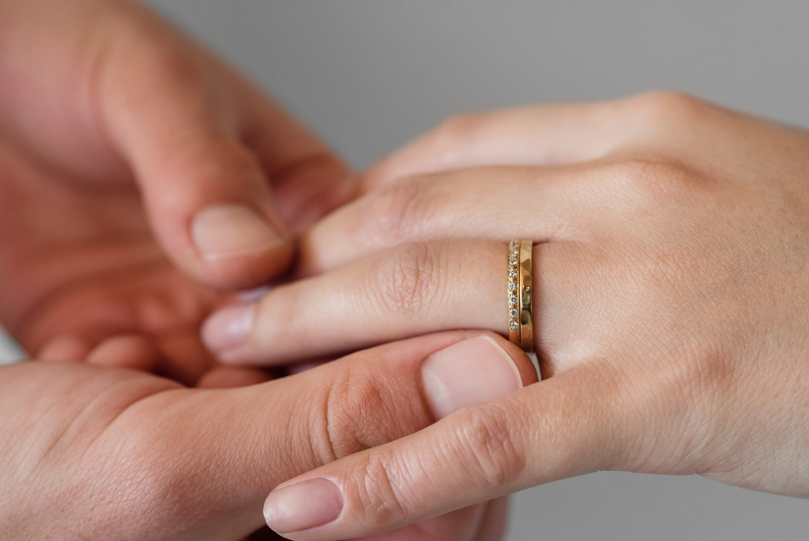
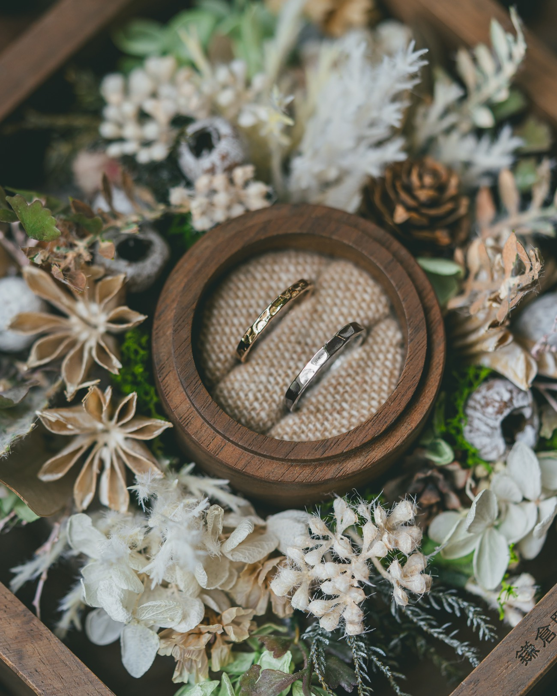
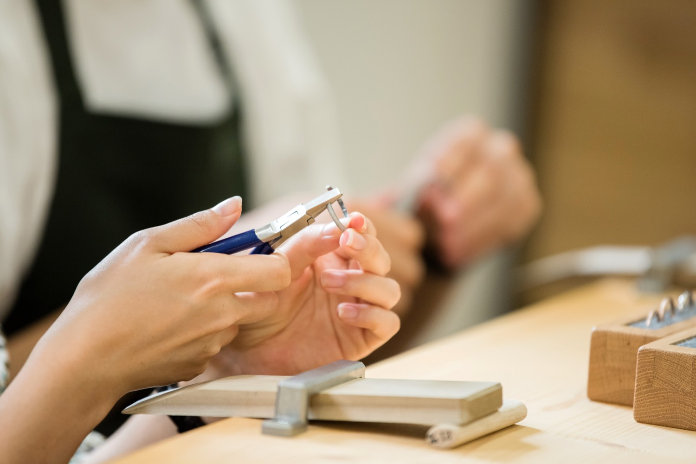
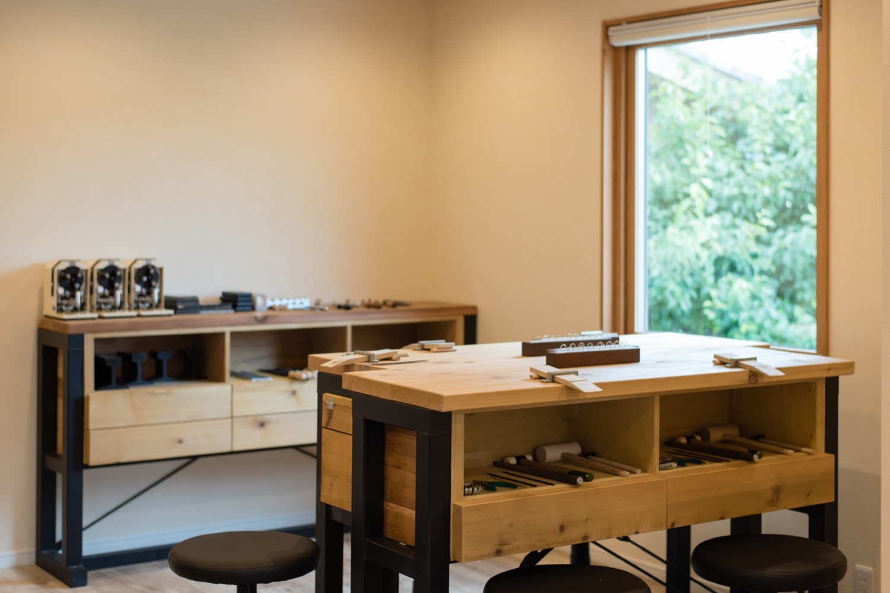
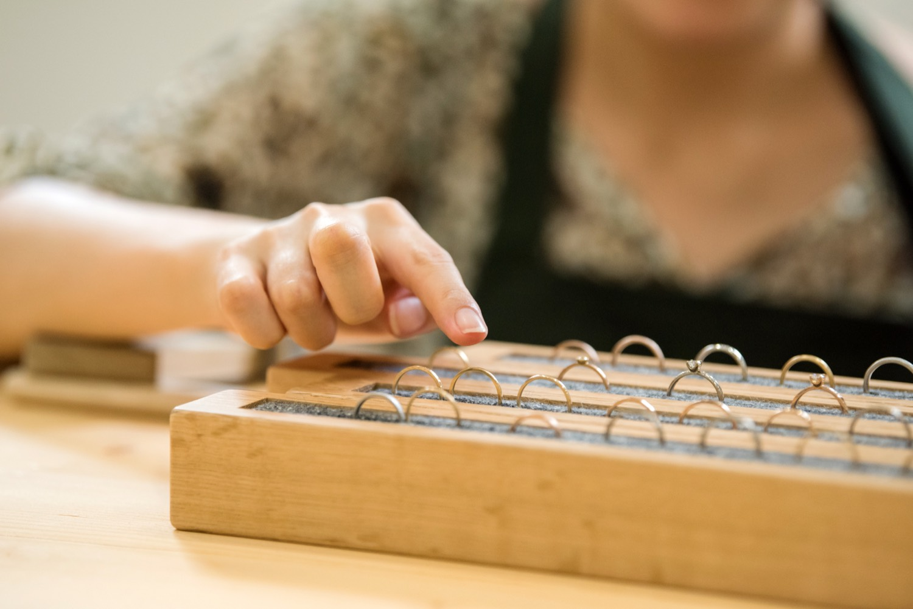
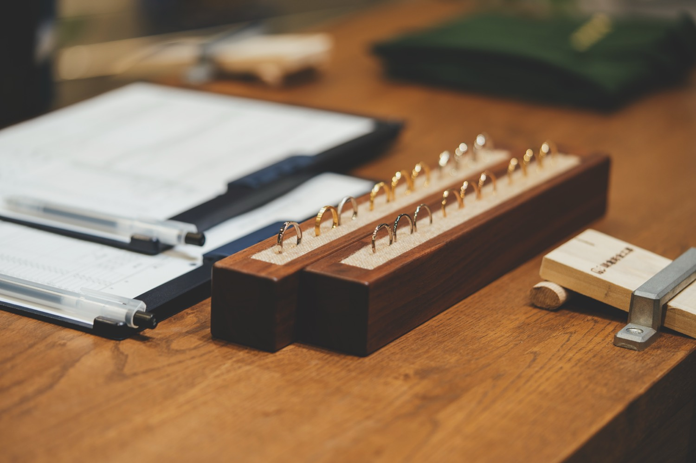

REASON 01
手作りならではの
手作りならではの楽しさと思い出
火を入れ、叩いて、磨く。少し大変な工程があるからこそ、完成した瞬間のうれしさは、既製品では味わえないものになります。
ふたりで、つくる。
手作り結婚指輪・婚約指輪
一本の棒状の金属から、ふたりの手で結婚指輪・婚約指輪をつくる。むずかしい工程は職人がそばで支えるから、初めてのおふたりでも、毎日つけたくなる仕上がりに。
ご入力は約1分。相談だけのご見学予約もできます。

※実績数値は公式サイト記載値（掲載件数は2021年6月時点）。
空き状況のご確認だけでも、お気軽にどうぞ。
ABOUT
手作り結婚指輪は、デザイン決めから、火入れ・成形・磨きまでをふたりで体験する指輪づくり。できあがった指輪だけでなく、つくった一日そのものが、これからずっと残る思い出になります。

指輪に、ふたりの一日が宿る。
REASON

火を入れ、叩いて、磨く。少し大変な工程があるからこそ、完成した瞬間のうれしさは、既製品では味わえないものになります。

木の温もりと道具の気配が心地よい空間。緊張せず、ふたりのペースで制作に向き合えます。
鎌倉、横浜元町、大阪中崎町、東京蔵前。制作の前後に街歩きまで楽しめば、一日まるごと記念日になります。
むずかしい工程は職人が見極めてフォロー。体験の楽しさと、既製品のような完成度を両立します。

説明はていねいに、距離感はほどよく。ふたりが自然体で過ごせる時間づくりも、私たちの仕事です。
FLOW
棒状の金属が、ふたりの手で少しずつ指輪になっていきます。
ちょっと大変。
それが魅力。
店舗・コース・希望日時を選んで空席を確認。迷っている段階なら、見学だけの予約もできます。
サンプルを手に取りながら、素材・幅・かたち・仕上げを職人と相談して決めます。

棒状の金属を受け取ったら、ふたりの指輪づくりがスタートです。
金属に火を入れて、やわらかく加工しやすい状態に整えます。
職人がそばでサポート端と端をつないで、輪のかたちに。炎を使う、いちばんドキドキする工程です。
職人がそばでサポート芯金に通して木槌で叩き、少しずつきれいな円へ。工房に響く音も思い出になります。
磨きと質感、刻印を整えて、指になじむ表情にしていきます。
つくった時間ごと、ふたりの指輪を持ち帰ります。
MOVIE
炎の音、金属の手ざわり、職人との距離感。約90秒の映像で当日の流れをイメージできれば、「不器用だけど大丈夫かな」という不安は、きっと小さくなります。
※動画枠（公開時に実映像を設定します）WORKS
制作例：プラチナ／ゴールド、鏡面・つや消し・槌目仕上げ など
VOICE
予約前に感じていた不安も、
終わってみれば、ぜんぶ思い出。
指輪を見るたびに作った日のことを全部思い出せるんですよお客様インタビュー vol.14
最初は、えっ……と思いました。作れるわけがないってお客様インタビュー vol.15
Instagramにアップしたんですが、みんなもビックリしていましたね。お客様インタビュー vol.07
FAQ
はい、大丈夫です。職人が工程ごとに手元を確認し、むずかしい部分はていねいにサポートします。作る楽しさは残しつつ、仕上がりもきれいに整えていきます。
コースや制作内容により異なります。当日お持ち帰りいただける場合と、仕上げのためにお預かりする場合がありますので、ご希望の方は予約時にご相談ください。
サイズ調整は基本無料です。工房へのお持ち込みのほか、郵送でもご相談いただけます（目安として2〜3週間ほどお預かりする場合があります）。
大丈夫です。当日、工房で正確に計測してから制作に入りますので、事前にサイズを調べておく必要はありません。
サンプルを見ながら、素材・幅・かたち・仕上げをその場で選べます。迷ってしまっても、職人が日常使いしやすい選び方を一緒に整理します。
RESERVATION
ご入力は約1分。まずは店舗と希望日時をお選びください。制作内容のご相談や不安なことは、要望欄にお書きいただけます。
手作り結婚指輪・婚約指輪
ご入力は約1分